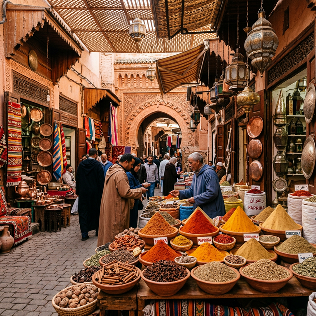

Southeast Asia has long been a magnet for travelers seeking vibrant cultures, stunning landscapes, and unforgettable experiences. But beyond the well-trodden paths of Bangkok's Grand Palace, Bali's Kuta Beach, and Angkor Wat lies a treasure trove of hidden destinations that offer something far more precious — authenticity, solitude, and the thrill of discovery.
After spending over two years exploring every corner of this remarkable region, the NomadLens team has curated our definitive guide to the 10 most spectacular hidden gems in Southeast Asia. These are the places where you can still find untouched beaches, traditions unchanged by tourism, and landscapes that will leave you breathless. Whether you're a seasoned backpacker or a first-time visitor, these destinations deserve a top spot on your 2026 travel itinerary.
1. Munduk, Bali — Indonesia
While most visitors to Bali flock to Seminyak, Ubud, or Nusa Penida, the highland village of Munduk remains one of the island's best-kept secrets. Perched at 800 meters above sea level in northern Bali, Munduk offers a dramatically different experience from the beach-focused south.
The village is surrounded by terraced coffee and clove plantations that cascade down misty mountainsides. The Munduk Waterfall, a 15-meter cascade hidden within dense tropical forest, is accessible via a scenic 30-minute trek through cinnamon and cacao trees. The air here is cool and fragrant, and the silence is broken only by birdsong and the distant rush of water.
What makes Munduk truly special is the pace of life. Homestays are run by local families who welcome you with Balinese coffee and home-cooked meals. Sunrise walks through the rice terraces reveal a Bali that existed before the tourist boom — a Bali of ceremony, community, and quiet beauty.
"Munduk is where I fell in love with Bali all over again. It's the Bali the guidebooks forgot."
2. Ban Gioc Falls, Vietnam
Straddling the border between Vietnam and China in Cao Bang Province, Ban Gioc is Southeast Asia's largest transnational waterfall and one of its most awe-inspiring natural wonders. Despite being featured in National Geographic, this spectacular 300-meter-wide cascade remains remarkably uncrowded, receiving only a fraction of the visitors that Ha Long Bay attracts.
The journey to Ban Gioc is an adventure in itself. The winding mountain roads from Hanoi pass through limestone karst landscapes punctuated by rice paddies, ethnic minority villages, and roadside markets selling exotic fruits. The 270-kilometer drive takes roughly 6 hours, but every kilometer reveals a new postcard-perfect scene.
At the falls, bamboo rafts piloted by local Tày people take you close enough to feel the mist on your face. The surrounding area offers caves, mountain treks, and some of Vietnam's most authentic rural homestay experiences.
3. Siargao Deep Forest, Philippines
Siargao has gained fame as the surfing capital of the Philippines, but venture beyond Cloud 9's famous waves and you'll discover a different side of this teardrop-shaped island. The Siargao Deep Forest is a protected old-growth forest filled with ancient trees, natural rock pools, and pristine rivers that few tourists ever explore.
The Magpupungko Rock Pools — massive natural tidal pools flanked by ancient flat rocks — are accessible only at low tide, creating a natural infinity pool effect that rivals any luxury resort. The crystal-clear water is surrounded by mangroves and coconut palms, offering a swimming experience that feels completely untouched by the modern world.
Take a motorbike through the island's interior roads, where you'll pass through tiny fishing villages, coconut forests, and roadside stalls serving freshly caught seafood grilled over coconut husks. This is the Philippines at its most raw and beautiful.

4. Hsipaw, Myanmar
For travelers seeking an experience unmarked by mass tourism, the small town of Hsipaw in Myanmar's Shan State is a revelation. Accessible by one of Asia's most dramatic train journeys — the Pyin Oo Lwin to Hsipaw route, which crosses the famous Gokteik Viaduct — this town offers trekking experiences through Shan and Palaung hill tribe villages that have changed little in centuries.
Multi-day treks through terraced hills lead to villages where families welcome you into their homes, sharing meals of steaming shan noodles, preserved tea leaf salad, and locally brewed rice wine. The cultural exchange is genuine and deeply rewarding, offering insights into traditional ways of life that few travelers ever experience.
5. Koh Rong Sanloem, Cambodia
While neighboring Koh Rong has developed into a backpacker party destination, Koh Rong Sanloem remains a pristine paradise. Saracen Bay's crescent of powdery white sand is lapped by waters so clear you can see tropical fish from the shore. The island has limited electricity, no ATMs, and barely any WiFi — and that's exactly the point.
At night, the bioluminescent plankton transforms the shoreline into a galaxy of blue light. Kayak through the glowing water under a canopy of stars, and you'll understand why travelers describe this as a once-in-a-lifetime experience. Accommodation ranges from rustic beachfront bungalows to a handful of eco-resorts that harmonize with the natural environment.
6. Phong Nha, Vietnam
Home to the world's largest cave — Son Doong — Phong Nha-Ke Bang National Park is a UNESCO World Heritage Site that rewards explorers with underground rivers, massive caverns adorned with ancient stalactites, and dense jungle teeming with endemic wildlife. While Son Doong requires a permit and a four-day expedition (approximately $3,000 per person), the park offers numerous more accessible caves.
Paradise Cave stretches 31 kilometers underground, with a visitor-accessible section featuring cathedral-like chambers illuminated to reveal their geological majesty. The Dark Cave offers mud-bathing and zip-lining experiences. Above ground, the Phong Nha countryside is spectacularly beautiful — limestone karsts erupting from emerald rice paddies, with water buffalo and farmers providing timeless pastoral scenes.
7. Pai, Thailand
Tucked away in a valley surrounded by misty mountains in Mae Hong Son Province, Pai is a small town with an outsized personality. The journey from Chiang Mai involves 762 curves through mountain roads — a legendary drive that's part of the Pai experience. What awaits is a bohemian-meets-traditional Thai culture that's unlike anywhere else in the country.
Pai's night market is a sensory feast of northern Thai cuisine, handmade crafts, and live music. Hot springs surrounded by forest, hidden waterfalls, and tribal village visits fill the days. Accommodation ranges from treehouse stays to riverside bamboo bungalows costing as little as $10 per night. The town attracts artists, digital nomads, and travelers seeking a slower pace, creating a uniquely cosmopolitan community in the heart of rural Thailand.
8. Nusa Penida, Indonesia
Just 45 minutes by speedboat from Bali's Sanur Beach, Nusa Penida feels like another world entirely. Dramatic cliffs plunge into sapphire waters, and the island's rugged interior reveals temple ruins, hidden waterfalls, and viewpoints that defy description. Kelingking Beach — the famous T-Rex-shaped cliff — is just the beginning.
Angel's Billabong is a natural infinity pool formed by tidal erosion, offering swimming opportunities above the crashing ocean below. Crystal Bay provides some of Indonesia's best snorkeling, with manta rays frequently spotted in the deep blue waters. The island is being developed, but visit now and you'll still experience it in a relatively raw state.
9. Luang Namtha, Laos
For eco-tourism at its finest, Luang Namtha in northern Laos offers multi-day treks through the Nam Ha National Protected Area — Southeast Asia's first community-based ecotourism project. Guided by local Hmong, Khmu, and Akha villagers, these treks combine physical adventure with profound cultural immersion.
Nights are spent in remote villages where electricity hasn't arrived, dinners are cooked over open fires, and the Milky Way blazes overhead with a clarity impossible in more developed destinations. Kayaking on the Nam Ha River through bamboo-lined gorges adds a water-based adventure to the experience.
10. Ha Giang Loop, Vietnam
The Ha Giang Loop is widely considered the most spectacular road trip in Southeast Asia, yet it remains far less traveled than similar routes in neighboring countries. The 350-kilometer loop through Vietnam's northernmost province winds through dramatic mountain passes, terraced rice valleys, and ethnic minority villages where Vietnamese is barely spoken.
The Ma Pi Leng Pass — often called the "King of Passes" — offers vertiginous views over the Nho Que River, a ribbon of turquoise carving through a canyon 700 meters below. Dong Van's karst plateau is a UNESCO Global Geopark, home to 300-million-year-old limestone formations and unique highland cultures. This is adventure travel at its purest — challenging, remote, and profoundly rewarding.
Planning Your Southeast Asia Adventure
The best time to visit most of these destinations is between November and April, during the dry season. Budget travelers can comfortably explore for $30-50 per day in most locations, including accommodation, meals, and local transport. We recommend spending at least 3-4 weeks to explore multiple hidden gems without rushing.
Remember to travel responsibly — support local businesses, minimize plastic use, and respect cultural customs. These hidden gems remain special precisely because they haven't been overwhelmed by mass tourism, and it's our collective responsibility to keep them that way.